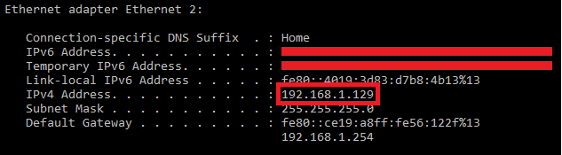

Quick Start Guide
This section aims to deliver an easy and simple set of examples that should help you get started with your first project using the Google Play Billing extension. One thing to note before starting is that some function calls trigger async responses, which can be listened to using the In-App Purchase Async Event.
Initialization
The first thing to look for when creating a Google Play Billing project in GameMaker using this extension is initializing your API.
Note
In all code that follows it is assumed that you are calling GPBilling_Init yourself manually to initialize the extension. This part can be left out if you have the function set as the extension's Init function (the default).
// Before executing any other code we first need to initialize the Google Play
// Billing API. This initialization is done with a simple function call and
// requires no arguments.
GPBilling_Init();
// After initialization you can connect to the store, this is necessary since
// we cannot buy/query products if we are not connected to our account. This
// function will trigger an ASYNC IN-APP PURCHASE event (similar to all the
// functions that trigger events in this extension).
var _error = GPBilling_ConnectToStore();
// The return value of this function can be 'gpb_error_unknown' or
// 'gpb_no_error' (these are constants, for more info see: gpb_error_type)
if (_error == gpb_error_unknown)
{
// At this point we know there was an error while requesting for
// connection, and we can act accordingly.
}
else
{
// The connection request was successful and we should look for a
// callback response from it.
}Given that the code above didn't produce any errors, we can listen to the callback response using the In-App Purchase Async Event, following the code below:
switch(async_load[?"id"])
{
// @triggered by GPBilling_ConnectToStore()
case gpb_store_connect:
// At this point we have just finished connecting to the store so
// we can now add products/subscriptions. Only the ones that are
// added locally can be purchased and queried.
GPBilling_AddProduct("single_time_purchase");
GPBilling_AddProduct("consumable_purchase");
GPBilling_AddSubscription("subscription_purchase");
// After adding the products you want to use locally, you can now
// query their information. This is required if you want to use
// any of the GPBilling_Sku_* functions.
// Start by querying the products first, only then query the subscriptions.
// Calling both at the same time may cause the Google API to error.
GPBilling_QueryProducts();
break;
// @triggered by GPBilling_ConnectToStore()
case gpb_store_connect_failed:
// At this point we have failed to connect to the store.
// You can now add logic to handle the problem.
break;
// @triggered by GPBilling_QueryProducts()
case gpb_product_data_response:
// At this point we have a product data response from the call to
// GPBilling_QueryProducts. Check if it is successful and
// if it is, query the subscriptions next.
var _query_json = async_load[? "json_response"];
var _query_data = json_parse(_query_json);
if (_query_data.success)
{
// Process the result of the products query here first
//
// Then query the subscriptions
GPBilling_QuerySubscriptions();
}
break;
// @triggered by GPBilling_QuerySubscriptions()
case gpb_subscription_data_response:
// At this point we have a subscription data response
// after first having received a product data response.
// Process this subscription data.
var _query_json = async_load[? "json_response"];
var _query_data = json_parse(_query_json);
if (_query_data.success)
{
// Process the result of the subscriptions query here first
//
// Now that we know the product data and subscription data
// we can track what was purchased and what not.
// This is done using GPBilling_QueryPurchasesAsync with a given SKU type.
GPBilling_QueryPurchasesAsync(gpb_purchase_skutype_inapp);
}
break;
}Querying Purchases
Another important step while developing an app with IAP is to track what was purchased and what was not. Maybe you want to make sure the user cannot buy something that was already bought or you want to check if a user has bought a given subscription. We can do this using the following steps:
- Connect to the store (see: Initialization)
- Add the products/subscriptions locally (see: Initialization)
- Use the GPBilling_QueryPurchasesAsync function with a given SKU type gpb_purchase_skutype
Let's jump into the fully documented code sample below:
// After the first two steps are complete we can now use the extension
// functionality to help with the process.
// For this we first make a call to GPBilling_QueryPurchasesAsync
// that will trigger a gpb_query_purchase_async response in the IAP event:
switch(async_load[?"id"])
{
// Other cases...
case gpb_query_purchase_async:
if (async_load[? "success"])
{
var _query_json = async_load[? "response_json"];
// Now we can proceed. We will use json_parse since it generates
// structs/arrays that are easier to handle and don't need manual
// disposal.
var _query_data = json_parse(_query_json);
// The query data now has a 'success' variable that holds a boolean
// depending on whether or not the query was successful.
if (_query_data.success)
{
// We can now access the 'purchases' array that stores a list of
// all the products owned by the user.
var _purchases_array = _query_data.purchases;
// Loop through the array of purchases
var _purchase, _purchases_count = array_length(_purchases_array);
for (var i = 0; i < _purchases_count; i++)
{
_purchase = _purchases_array[i];
// Now we have access to all the purchase data that can be
// stored for later use; please refer to the documentation of
// GPBilling_QueryPurchasesAsync for more details.
//
// _purchase.orderId
// _purchase.packageName
// _purchase.productId
// _purchase.purchaseTime
// _purchase.purchaseState
// _purchase.autoRenewing
// _purchase.acknowledged
//
}
}
else
{
// Data query was not successful at this point so there is an
// extra property available - 'responseCode' - that will store one
// of the Google Play Store error codes (Error Type).
}
}
break;
}Follow the same procedure for subscriptions, replacing gpb_purchase_skutype_inapp with the other gpb_purchase_skutype available to the API gpb_purchase_skutype_subs. The data collected on both runs will give you all the information you need on owned items.
One-time Purchases
There are three types of IAPs you might use in your project; this section will deal with one-time purchases. These purchases are bought only once and cannot be bought anymore after that. The life cycle of this type of purchase is:
- Connect to the store (see: Initialization)
- Add the products/subscriptions locally (see: Initialization)
- Purchasing the product
- Waiting for a receipt callback & verifying the purchase (see: Verification)
- Acknowledging the purchase
- Waiting for an Acknowledge callback
- Rewarding the user with the corresponding item
These steps are essential for correct use of the API. For a quick set-up let's look into the fully documented code sample provided below (the first two steps can be checked above).
Step 3 - For this specific case we are using a button click to trigger the purchase; you can use whatever method you see fit.
// Early exit if the operating system is not Android
// This check will prevent the IAP code from running if we are running the project
// in an unsupported operating system.
if (os_type != os_android) exit;
// Early exit if there is no connection to the store.
if (!GPBilling_IsStoreConnected()) exit;
// Proceed to purchase the product
// We need to make sure we added the product locally using the correct SKU
// identifier so this product is available for purchase.
var _error = GPBilling_PurchaseProduct("single_time_purchase");
// The function above returns an error code that can be checked against the
// gbp_error_* constants.
switch(_error)
{
case gpb_error_not_initialised:
// The API has not been initialised yet.
break;
case gpb_error_no_skus:
// There are no SKUs in the product/subscription list.
break;
case gpb_error_selected_sku_list_empty:
// There are no SKUs in the product list (although there might be
// in the subscription list).
break;
case gpb_no_error:
// There were no errors, we should expect a response callback
break;
}Step 4/5 - Given that the code above didn't produce any errors we can listen to the callback response using the Async In-App Purchase event, following the code below:
switch(async_load[?"id"])
{
// @triggered by GPBilling_PurchaseProduct()
case gpb_iap_receipt:
// At this point we just finished a purchase and are now
// triggering a receipt event.
// We look at the async load for a 'response_json', since it is a
// json string we can use 'json_parse' on it.
var _response_data = json_parse(async_load[?"response_json"]);
// There is a 'success' variable that holds a boolean depending on
// whether or not the purchase was successful.
if (_response_data.success)
{
var _purchases = _response_data.purchases;
var _purchases_count = array_length(_purchases);
// We will loop through everything because there could be
// more than one purchase being triggered.
for(var i = 0; i < _purchases_count; i++)
{
var _purchase = _purchases[i];
var _sku = _purchase.productId;
// At this point we will check if this SKU corresponds
// to the purchase we just made, ideally this should
// be done using a more automated approach.
if (_sku != "single_time_purchase") continue;
var _token = _purchase.purchaseToken;
// At this point we should now verify the purchase
// there is a section on that later (see Verification)
if (__yourVerificationMethod__)
{
// At this point the purchase was verified and
// we should now proceed to acknowledgement
var _err = GPBilling_AcknowledgePurchase(_token);
// We will store the purchase token so we can
// check the acknowledgement event, this is not
// the ideal method to use.
global.singleTimePurchaseToken = _token;
// The return value from the function call above
// is either: gpb_error_unknown or gpb_no_error.
}
}
}
break;
}Step 6/7 - Given that the code above didn't produce any errors we can listen to the callback response using the Async In-App Purchase event and reward the user accordingly, following the code below:
switch(async_load[?"id"])
{
case gpb_acknowledge_purchase_response:
// Convert JSON string into data struct
var _response_data = json_parse(async_load[?"response_json"]);
// Check if tokens match
if (_response_data.purchaseToken == global.singleTimePurchaseToken)
{
// At this point we know the event refers to this in-app
// purchase. Now we need to check if there are any errors.
if (_response_data.responseCode == gpb_no_error)
{
// At this point the purchase acknowledgement
// succeeded. We can now REWARD THE USER.
}
else
{
// At this point the purchase acknowledgement
// failed. We can act accordingly.
}
}
break;
}Consumables
One other type of IAPs is the consumables; this section will deal with them. These purchases can be bought multiple times. The life cycle of this type of purchase is mostly similar to the previous section (One-time Purchases) with just a couple of changes:
- Connect to the store (see: Initialization)
- Add the products/subscriptions locally (see: Initialization)
- Purchasing the product (see: One-time Purchases)
- Waiting for a receipt callback & verifying the purchase (see: Verification)
- Consume the purchase
- Waiting for a Consume callback
- Rewarding the user with the corresponding item.
These steps are essential for a correct use of the API. For a quick set up let's look into the fully documented code sample provided below.
Step 5 - For this specific case we will start the guide midway through since you can follow the previous section to understand how it works. The main changes occur after the purchase has been verified.
// At this point we should now verify the purchase
// there is a section on that later (see Verification)
if (__yourVerificationMethod__)
{
// At this point the purchase was verified and
// we should now proceed to consume it.
var _err = GPBilling_ConsumePurchase(_token);
// We will store the purchase token so we can
// check the consumption event (this is not
// the ideal method to use).
global.consumablePurchaseToken = _token;
// The return value from the function call above
// is either: gpb_error_unknown or gpb_no_error.
}Step 6/7 - Given that the code above didn't produce any errors we can listen to the callback response using the Async In-App Purchase event and reward the user accordingly, following the code below:
switch(async_load[? "id"])
{
case gpb_consume_purchase_response:
// Convert JSON string into data struct
var _response_data = json_parse(async_load[?"response_json"]);
// Check if tokens match
if (_response_data.purchaseToken == global.consumablePurchaseToken)
{
// At this point we know the event refers to this in-app
// purchase. Now we need to check if the purchase
// consumption was successful (there is a 'success'
// property we can use for that purpose).
if (_response_data.success)
{
// At this point the purchase was successfully
// consumed; it succeeded. We can now REWARD THE USER.
}
else
{
// At this point the purchase failed to be consumed.
// We can act accordingly.
}
}
break;
}Subscriptions
The last type of IAP you might encounter are subscriptions; this section will deal with how to purchase subscriptions. These purchases are bought and remain unavailable until the subscription period ends. The life cycle of this type of purchase is:
- Connect to the store (see: Initialization)
- Add the products/subscriptions locally (see: Initialization)
- Purchasing the subscription
- Waiting for a receipt callback & verifying the purchase (see: Verification)
- Acknowledging the purchased (see: One-time Purchases)
- Waiting for a acknowledge callback (see: One-time Purchases)
- Rewarding the user with the corresponding item (see: One-time Purchases)
These steps are essential for correct use of the API. For a quick set up let's look into the fully documented code sample provided below.
Step 3 - For this guide the only change occurs during purchase and we shall cover the changes from previous purchase.
// Early exit if the operating system is not Android
// This check will prevent the IAP code from running if we are
// running the project in an unsupported operating system.
if (os_type != os_android) exit;
// Early exit if there is no connection to the store.
if (!GPBilling_IsStoreConnected()) exit;
// Proceed to purchase the product
// We need to make sure we added the product locally using the correct SKU
// identifier so this product is available for purchase.
var _error = GPBilling_PurchaseSubscription("subscription_purchase");
// The function above also returns an error code that can be checked against
// the gbp_error_* constants.
switch(_error)
{
case gpb_error_not_initialised:
// The API has not been initialised yet.
break;
case gpb_error_no_skus:
// There are no SKUs in the product/subscription list.
break;
case gpb_error_selected_sku_list_empty:
// There are no SKUs in the product list (although there might be
// in the subscription list).
break;
case gpb_no_error:
// There were no errors, we should expect a response callback
break;
}The main difference is in the GPBilling_PurchaseSubscription function; this function must be used when we want to purchase an item that is a subscription.
Verification
The verification step in a purchase life cycle is very important and might be the entry point for spoofing your game. We can have two approaches for that; firstly, a more academic implementation that is more vulnerable and not recommended for enterprise standards, and secondly a more advanced implementation that requires the use of a personal server.
Simple Version
For the simple version (the one used in the demo) we can use the purchaseToken to verify the purchase following the code below:
// This is purely an example. Verifying in this manner is less secure and
// prone to spoofing. Ideally, developers will verify all IAPs - consumable,
// subs and entitlements - using their own server.
// The first step is to get the signature for the given token
var _signature = GPBilling_Purchase_GetSignature(_token);
// Then we query the JSON information from the purchase
var _purchase_json_str = GPBilling_Purchase_GetOriginalJson(_token);
// Then we call the function 'GPBilling_Purchase_VerifySignature' that will
// take both previously queried values and verifies the signature
if(GPBilling_Purchase_VerifySignature(_purchase_json_str, _signature))
{
// At this point the purchase was verified and we should now proceed to
// acknowledge or consume it.
}As you can see the main problem with this approach is that we are passing the signature and a plain JSON file with purchase information around and that is not a good idea.
Advanced Version
For the advanced version a complete "How To" will not be explained since it would be necessary to build your own server and implementations may vary depending on your project.
- You will need to implement a server capable of handling HTTP requests.
- Use Google auth protocol API to contact Google Store and perform verification.
- Then from the client side (GameMaker) you can create an http_get request building your own URL and querying the server for verification.
This is implemented in the demo project but is commented out, but you can go in and test it if you need to. To debug the provided IAP verification server follow these simple steps:
- Make sure you have Node.js installed on your system (installation)
- Extract the "nodejs-verification-server.zip" into a folder of your liking (desktop)
- Using a command prompt, navigate to the "nodejs-verification-server" folder
- Use the command
npm install(to install the dependencies) - Follow the instructions in the file "private/credentials.js" to create your API access key.
- Use the command
npm start(to start the server)
Now follow these next steps on the client side (GameMaker project):
- Go to the Async IAP Event inside
Obj_GooglePlayBillingand uncomment the code block that is there. - Replace the address value with your local machine IP address (you can check that using
ipconfigin your command prompt window). An example for the address we can use is"192.168.1.129".

- You should now go to the
Game Options->Android->Permissions->Inject to Android Application Tag, and add the following code there (seeandroid:usesCleartextTraffic):
android:usesCleartextTraffic="true"- Running the example project and buying the subscription will validate the subscription successfully and pop up the async message box.
Note
This is a demo implementation of a dedicated server to verify your purchases. The included server is able to check both subscriptions and in-app purchases (consumables & single-time) and should give you an idea of how Google API interaction should be handled.